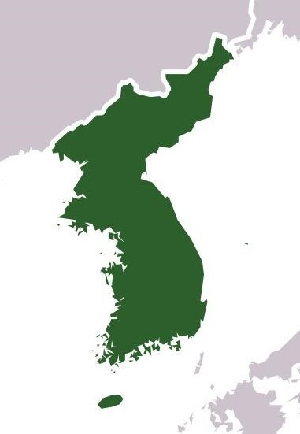

한반도는 우리나라 국토를 지형적으로 일컫는 말이에요. 우리나라의 영토는 한반도와 그 부속 도서를 포함해요. 우리나라 영토 남북의 길이는 약 1,000km, 동서 폭은 약 300km 정도 되고 면적은 약 22만 제곱킬로미터예요.
한반도는 대륙과 대양이 만나는 지점에 위치하고 있기 때문에 지리적인 이점이 커요. 대륙과 해양을 잇는 위치에서 문화를 전파할 수 있는 통로가 될 수 있어요. 원료를 수입하여 완제품을 만들어 파는 가공 무역이 발달하기에 적합하고, 대륙과 해양으로의 진출하기에 유리하지요. 앞으로 한반도는 동북아시아의 물류 거점으로 발전할 잠재력이 크답니다.
